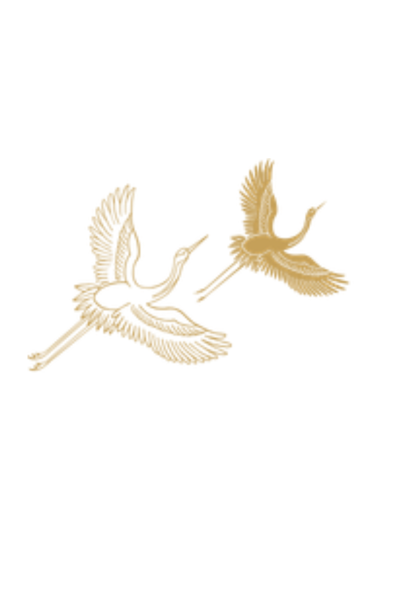
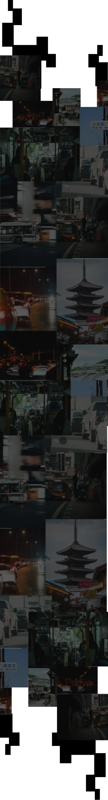
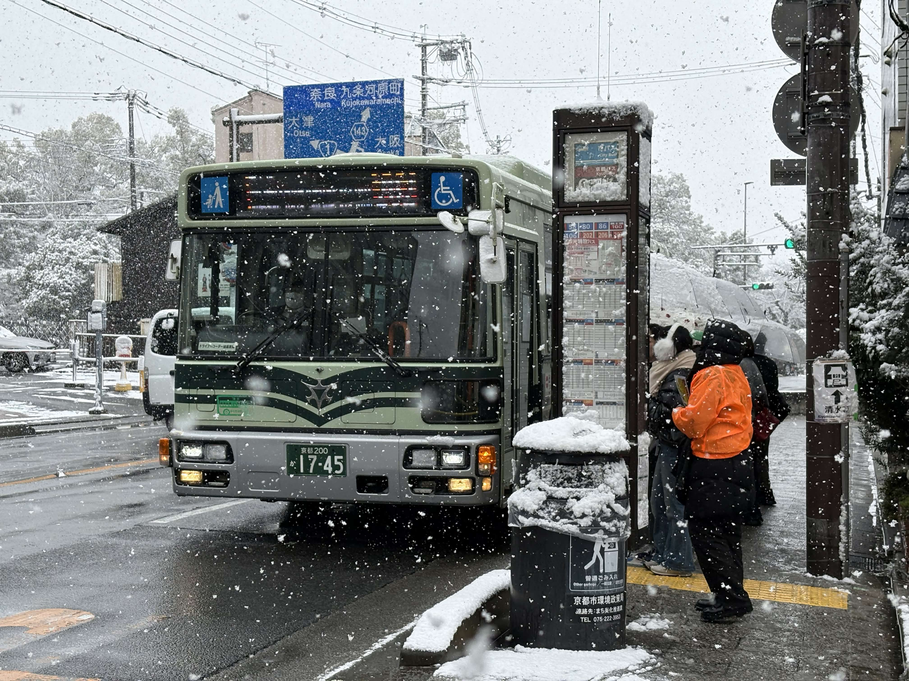
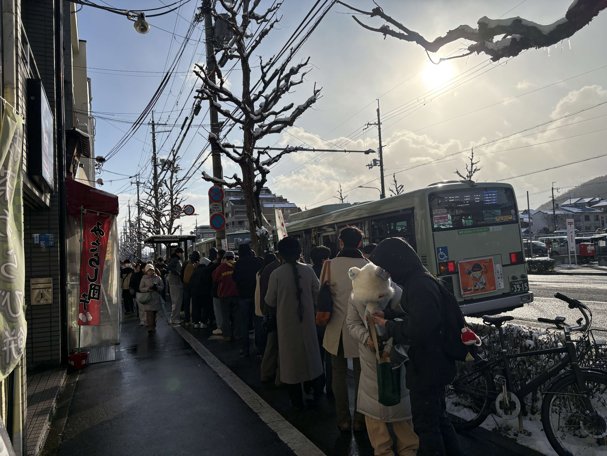

乗れるバス、何本後？
サンプルセンテンスサンプルセンテンス


観光客数 5606 万人
世界有数の観光都市となった
京都
しかし、市民や観光客からは
「乗れないバス」への不満が聞こえる。
あまりの混雑で、観光地へ向かう市バスには人ひとりたりとも入る隙間がないこともしばしば。
何本バスを見送れば、お目当てのバスに乗れるのか―
そして、市民も観光客も快適に移動できる交通構造を考えていく。

取材当日の2月8日は市内は大雪。
さらに、衆院選も行われていた。
それでも、なお、五条坂のバス停は多くの乗客が乗り降りする。
降りる人はみな一斉に清水寺へ。
清水寺への最寄りのバス停は五条坂と、清水道の2ヶ所。
2021年のデータでは、合わせて平日乗降客数は8062人。
(注 コロナ渦)
京都市バスでも8位ほどの乗降客数になる。
また、2024年から運行されている観光特急バスも停車する。
しかし、このバスを見送る人も多い。
なぜだろうか。
その原因は、通常の2倍の運賃か、それとも知られていないだけか。
現時点ではまだ分からない。
しかし、混雑緩和を目的とした施策が、必ずしも現場で選ばれているとは限らないと言えそうだ。

昼下がり、金閣寺道のバス停につく頃には、雪はすっかり止んだ。
晴天が戻ってきた。
金閣寺道のバス停は上下とも長い行列ができていた。
バス停の屋根上の残雪のみが、先ほどまでの大雪を物語る。
金閣寺へのアクセスは、この金閣寺道停留所が担っている。
付近には鉄道駅はない。
近くても、北野白梅町(xxkm) や地下鉄北大路駅 (xxkm) である。
いずれも徒歩で行くには少々不便である。
さらに、付近には立命館大学衣笠キャンパスもあり、生活と観光の動線が絡み合う場所でもある。
金閣寺道から北野白梅町やJR線と乗り換えできる西ノ京円町まで満員ということもざらだろう。